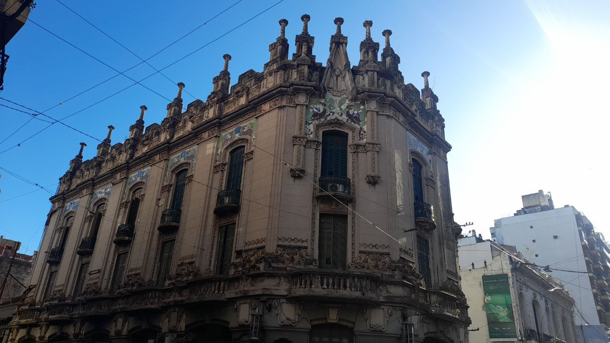
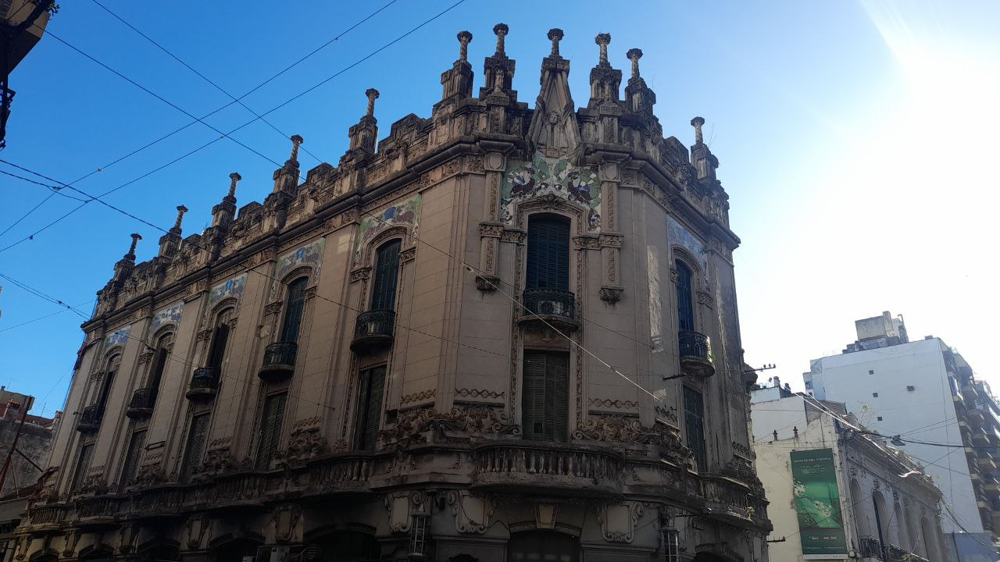

Fotografías destacadas
Encontra las mejores fotos de los rincones escondidos de la ciudad. Si sos independiente, sumate a nuestra comunidad, donde podrás compartir con otros fotógrafos tus experiencias, recomendaciones y lo más importante, VAS A PODER VENDER TUS FOTOS

 
